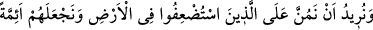
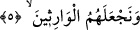
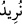
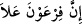
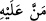
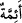
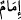

Yâni Firavun onları arka arkaya öldürüyordu; nihâyet öldürdüğü İsrâiloğullarının
çocuklarının sayısı 90.000’e ulaştı. Kız çocuklarını ise hizmet için hayatta bırakıyordu.
Sebebi şuydu: Bir kâhin ona, İsrâiloğulları arasından bir erkek çocuğunun doğacağını ve
elindeki mülküne son vereceğini söylemişti. Bu habere karşı Firavun’un böyle
davranması, onun son derece ahmak olduğunu gösterir. Çünkü bu haber doğru çıkarsa,
çocukları öldürmenin faydası nedir? Şâyet yalan çıkarsa, öldürmenin ne mânâsı var?
Nitekim Ömer b. Hattab (r.a.)’dan rivâyet edildiğine göre o şöyle demiştir:
Biz Rasûlullah (s.a.)’le beraberdik. Aralarında İbn Sayyâd’ın da bulunduğu
çocuklara uğradık; İbn Sayyad o günlerde buluğa ermek üzereydi. Rasûlullah (s.a.), ona
dedi ki: “Benim, Allah’ın Rasûlü olduğuma şehadet eder misin?” O da; “Hayır, sen
benim Allah’ın Rasûlü olduğuma şehadet eder misin?” karşılığını verdi.
Ben dedim ki: Ya Rasûlallah! İzin ver de onu öldüreyim.” Ömer (r.a.), onu deccal
sanmıştı. Bunun üzerine Rasûlullah (s.a.) şöyle buyurdu: “Şâyet o (deccâl) ise sen ona
musallat edilmeyeceksin.” Yani, İbn Sayyâd, deccâl ise sen onu öldürmeye muvaffak
olamayacaksın; zira onu ancak İsâ b. Meryem (a.s.) öldürecektir. “Şâyet o (deccal)
değilse, onu öldürmenin bir hayrı ve bir faydası yoktur.”[84] “Çünkü o,” fesad ve
zulmün ne şekilde yapılacağını iyi bilen “bozgunculardandı.” Bu nedenle pek çok
mâsum insanı öldürmeye cesaret edebilmiştir.
5. Biz ise, o yerde güçsüz düşürülenlere lütufta bulunmak, onları önderler
yapmak ve onları (mukaddes topraklara) vâris kılmak istiyorduk.
“Biz ise, o yerde güçsüz düşürülenlere” yâni onları (İsrailoğullarını) boğulmaktan
kurtararak Firavun ve beraberindekilerine üstün kılmak suretiyle “lütufta bulunmak
istiyorduk.”
“__WORD__ (istiyorduk)” mâzî hâlin hikâyesi olup “__WORD__ (Firavun, (Mısır) toprağında
gerçekten azmış)” cümlesine ma’tuftur. Zira her ikisi de bir önceki âyette geçen “__WORD__ (haber)” kelimesinin tefsiri olarak gelmişlerdir. Lügâtte bir kimse bir başkasına bir şey
verdiği zaman “
” denilir. “__WORD__ ismi Allah Teâlâ’nın sıfatı olup başlangıçta
karşılıksız veren, bağışlayan... demektir.
“Ve onları önderler yapmak (istiyorduk)”
“__WORD__ kelimesi “__WORD__ kelimesinin çoğuludur. Dinde kendisine uyulan ve iktidâ edilen
imam, lider, önder ve başkan... mânâlarına gelir. İsrâiloğulları uzun süre başkalarının
esâretinde, köle ve hizmetçiler olarak çalıştıktan sonra onları din işlerinde kendilerine